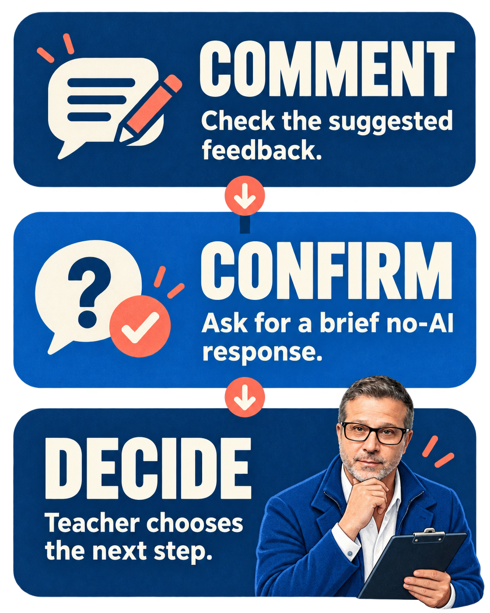

The classroom problem
A polished paragraph lands in front of us. An AI tool can flag a weak claim, suggest clearer wording and produce a tidy list of next steps. That can feel like a quick read on the student's understanding.
It is not.
The comment may be useful. But it is still a comment on what the tool was shown. It does not tell us who made each decision, what help was used, whether the student can explain the reasoning, or what they can do next without support.
That distinction matters when feedback starts drifting into grading. Feedback is meant to move learning forward. A grade is a teacher's judgement based on sufficient evidence. The first can help with the second, but it cannot quietly become the second.
AI in plain English
In March 2026, OpenAI announced a Learning Outcomes Measurement Suite. In plain language, it is an attempt to look beyond one test score by combining information about how the AI behaves, how a learner interacts with it and what changes over time. OpenAI says the suite is still being validated before broad release. It also reports an early randomized study with more than 300 college students, with different results in neuroscience and microeconomics and analysis still underway. That makes this a current development to watch, not a finished assessment solution. [R1]
The useful signal is in the problem OpenAI is trying to solve: a narrow performance measure does not capture the whole of learning. If the company building the tool needs several kinds of evidence over time, a single AI-generated comment on one student product should not become a mark.
My working rule would be simple: treat AI feedback as a draft hypothesis to inspect, not as a conclusion about the learner.
A high-school example
Imagine a Grade 10 history student submits a paragraph with a clear claim and two accurate details. An AI tool suggests: “Explain how this evidence supports your claim.” That is a reasonable prompt about the paragraph.
It does not establish that the student understands causation. The teacher still needs evidence. Ask the student to explain the link aloud, annotate the sentence, or apply the same reasoning to a fresh source without AI. The new response may confirm the suggested feedback, reveal a different gap, or show that no intervention is needed.
An AI response can be useful evidence about the work placed in front of it. By itself, it is not sufficient evidence of what the student can explain, transfer or do independently.
Cognitive Safety Box
Learning outcome: Students explain how evidence supports a claim, not simply add more detail.
Thinking students retain: Students choose the connection, justify it and revise in their own words.
Where AI may help: The tool can draft a question or point to a place where the explanation appears thin.
Evidence students provide: A short no-AI explanation, annotation or response to a fresh example.
Teacher decisions: The teacher decides whether the evidence shows understanding, what feedback to keep and whether any mark is warranted.
Try it this week
Try a ten-minute Comment–Confirm–Decide routine with one familiar task. It needs no new account or tool.
1. Comment: Take one AI-suggested comment—or write a likely AI-style comment yourself. Check it against the learning intention. Keep, edit or reject it.
2. Confirm: Give the student a two- or three-minute no-AI prompt: “Show me what this comment means in your work,” or “Try the same idea on this fresh example.”
3. Decide: Read or hear the response. You decide whether to reteach, prompt, extend, or move on. Do not turn the AI comment into a score.
The companion activity linked below has a ready-to-use version. This routine is my proposal, not a tested intervention.

From Research to Practice
What the guidance says: The Education Endowment Foundation's guidance for ages 5–18 treats clear learning intentions and evidence of current thinking as foundations for feedback. It recommends feedback aimed at the task, subject processes or self-regulation, followed by a chance for the pupil to use it. The report also says effects vary widely; it does not offer one recipe for every classroom. It addresses teacher feedback, not generative AI. [R2]
What one AI study found: In a randomized field experiment at one Turkish high school, students using either GPT-4 tutor did better during assisted mathematics practice. On the immediately following unassisted exam, the base-tutor group scored lower than the no-AI control; the safeguarded-tutor group was not detectably different from control. This was short-term mathematics work in one school using tools deployed in 2023, so it does not establish what will happen in another subject, school or current product. [R3]
The narrow classroom takeaway: Work completed with support and understanding demonstrated without that support are different evidence. AI feedback may help us choose a follow-up question. The student's response to that question helps us judge what to do next.
Limits and cautions
Use only tools permitted by your school. Do not enter names, identifiers, confidential information or student work into an AI system unless your policy and consent arrangements clearly allow it. A teacher-written or synthetic sample is enough to practise the routine.
Access also matters. Do not make a student's mark depend on whether they have an account, device or stronger AI tool. And watch the workload: if checking AI comments takes longer than writing one good prompt yourself, skip the AI.
Most importantly, do not let fluent wording impersonate sound judgement. The teacher remains responsible for the evidence used, the interpretation made and the decision that follows.
Staffroom question
What would count as enough independent evidence, in your subject, to turn feedback on a product into a judgement about the learner?
— Chad Wadden
Sources
[R1] OpenAI (2026), New tools for understanding AI and learning outcomes. Summary, early research, measurement system and validation sections; full page read.
[R2] Education Endowment Foundation (2021), Teacher Feedback to Improve Pupil Learning: Guidance Report. Introduction and Recommendations 1–3, especially pp. 14–30; full report read.
[R3] Bastani et al. (2025), Generative AI without guardrails can harm learning: Evidence from high school mathematics. Abstract, experimental design, results, discussion, limitations and appendices; full paper read. The published correction changes an author affiliation only.
The Assignment Makeover: Same Learning Goal. Better Evidence. →